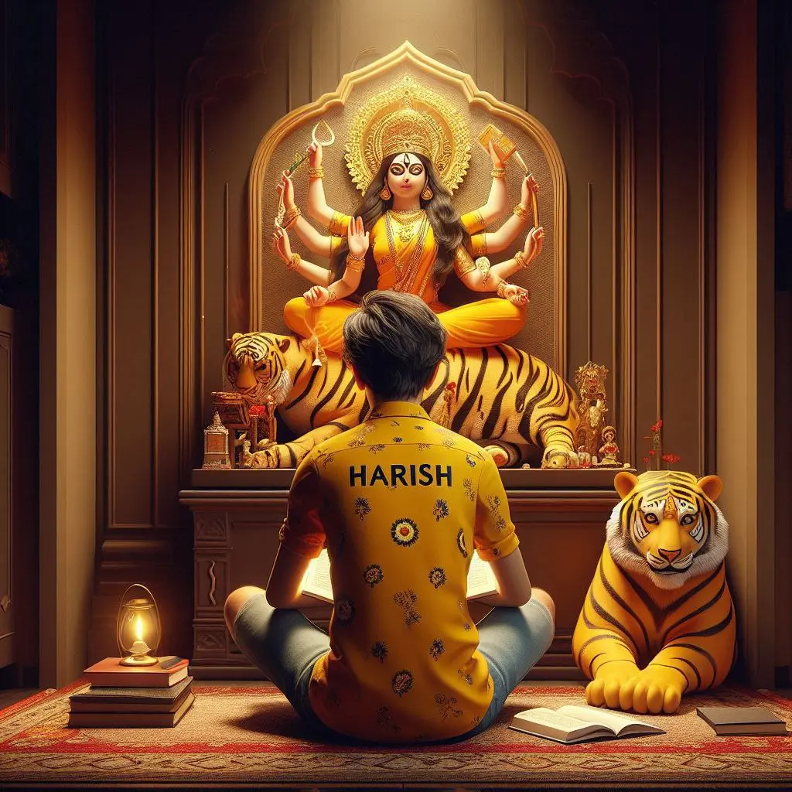
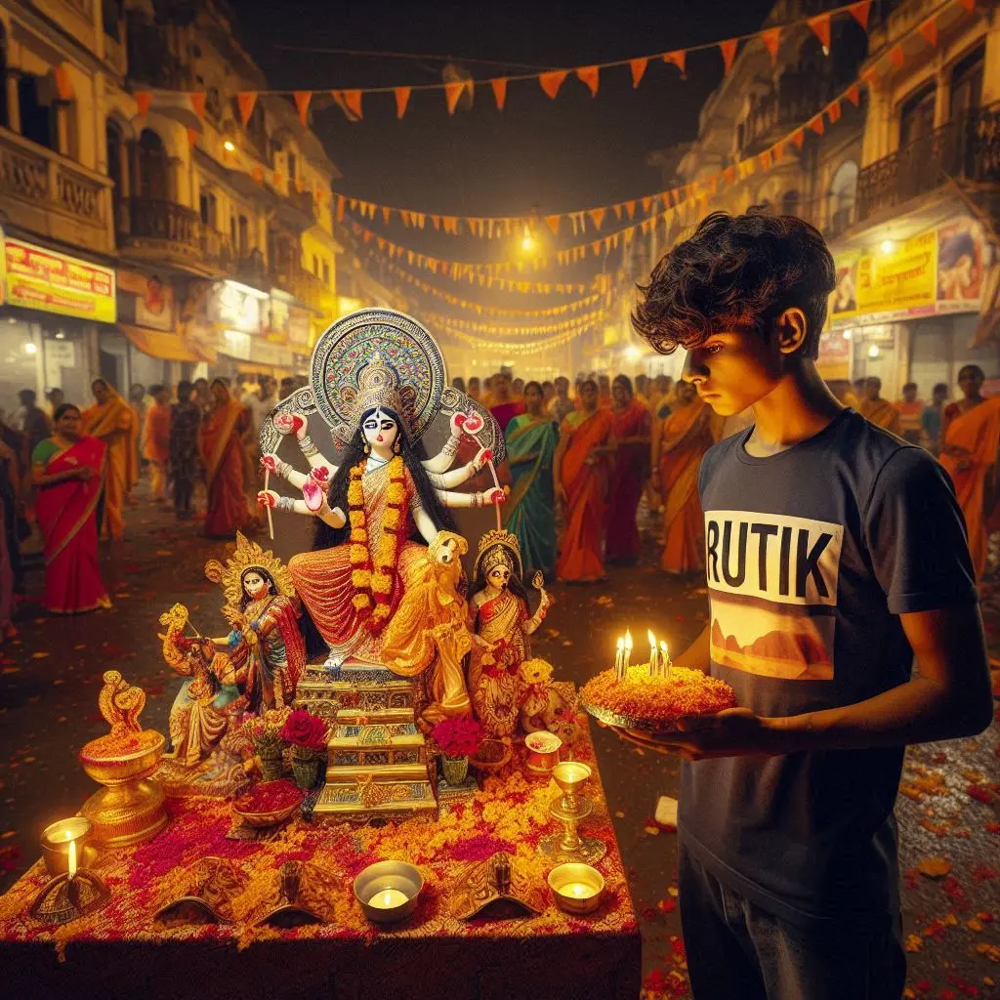
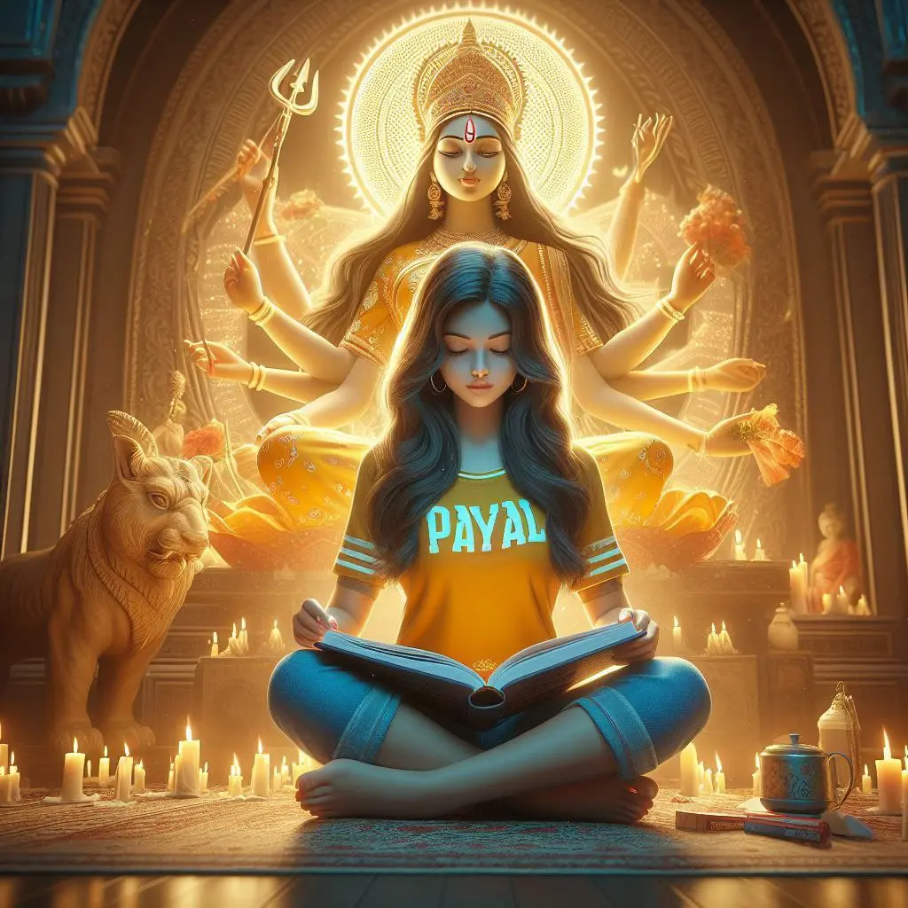
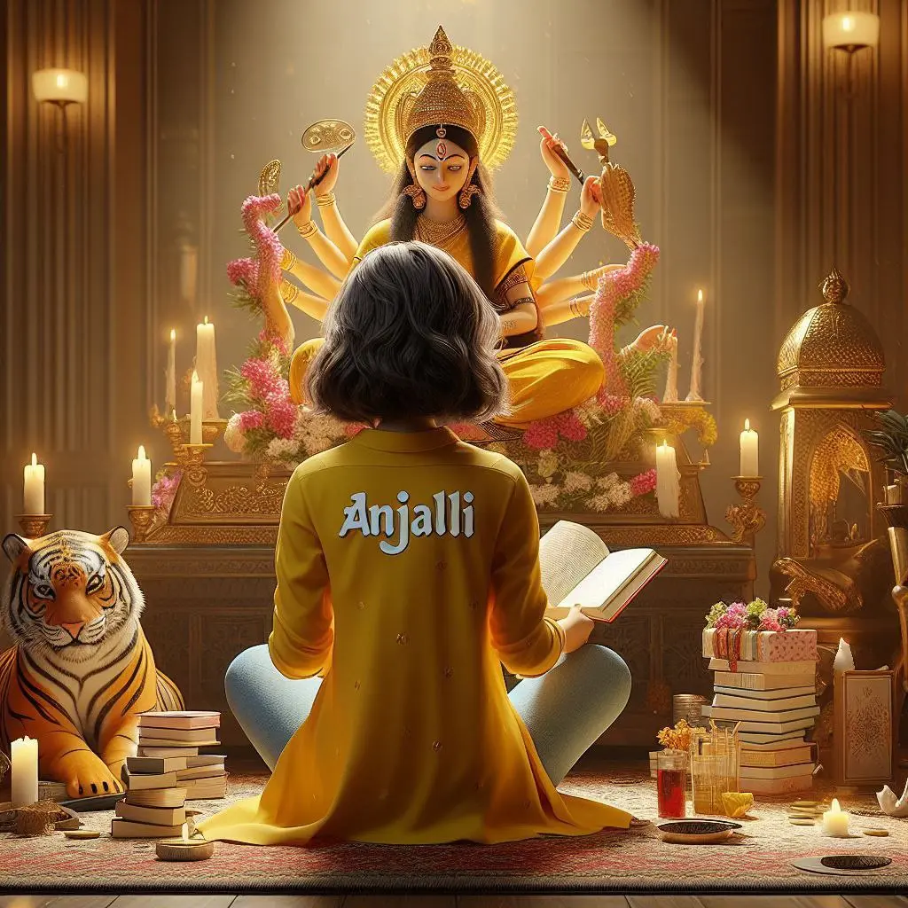
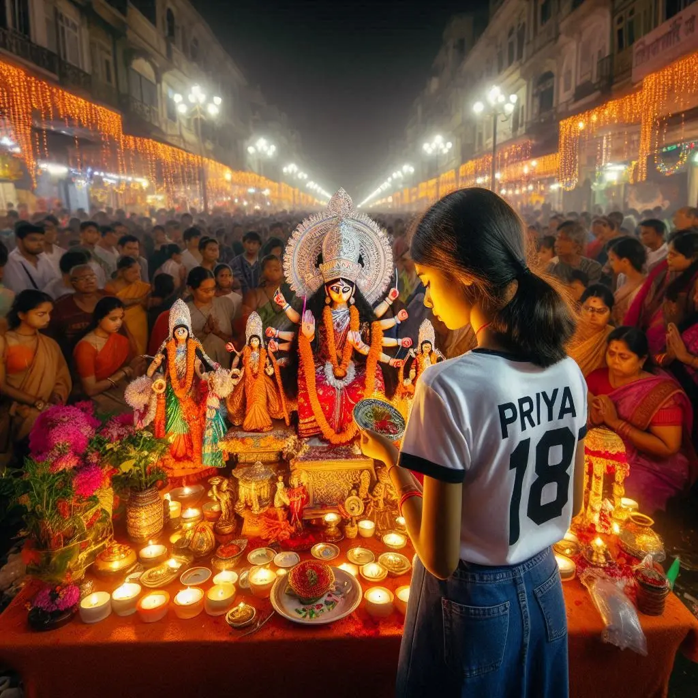
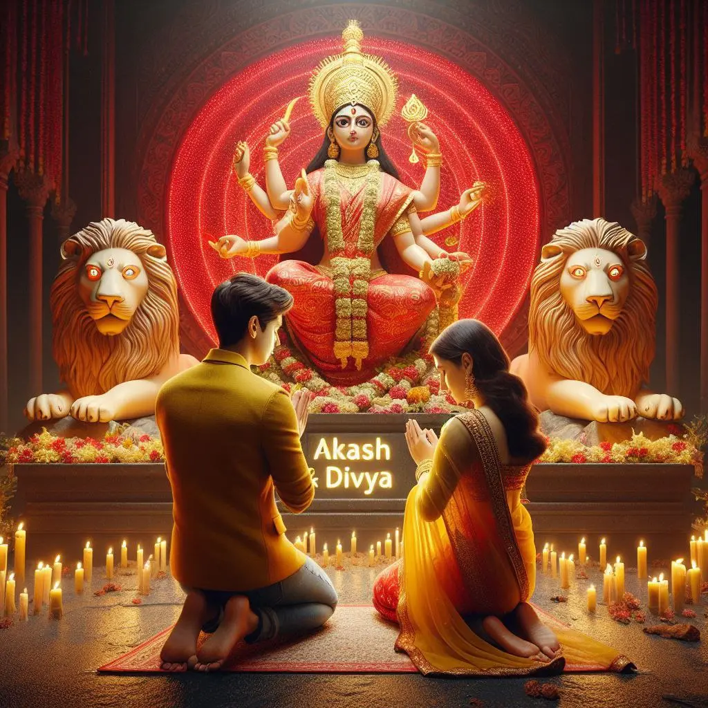

Home / Navaratri Special Pooja AI Photo Editing Prompts
Navaratri Special Pooja AI Photo Editing Prompts
By Prompt Library•25 October 2024
Hey everyone! Today, I want to talk about something cool. It’s about Navaratri and AI photo editing. Sounds fun, right?
First, let me tell you what this is all about. Navaratri is a big festival in India. It’s when we worship Goddess Durga. People do lots of poojas during this time. Now, with AI, we can make amazing pictures of these poojas!
In the picture, there's a realistic 20-year-old Boy sitting barefoot in prayer in front of a Maa Durga idol. He is wearing a yellow shirt with the name "Akash" written in big white bold letters on it.Reading Spiritual book , there's a large neon light backdrop of Maa Durga, making the scene look divine and peaceful. The idol is blessing the Boy as He prays.

? AI PROMPT
3d illustration of image of 18 year old boy, sitting comfortably on the floor in his puja room, wearing a yellow kurta with "Salman Khan" clearly written on the back in white bold letters , boy is reading a holy book, a small book in front of boy ,The idol of Maa Durga is sitting on a tiger, inside a decorated temple shape, a lamp and two incense sticks are burning infront of the idol, the atmosphere inside the room is grand, real image, 4k ultra hd quality. boy name is visible.

? AI PROMPT
"A bustling Navaratri celebration in a chowk (town square) at night. In the center, an 18-year-old boy named Rutik stands before a mini temple housing a vibrant statue of Maa Durga. Rutik wears a t-shirt with 'Rutik' printed on it and holds a decorated pooja thali filled with flowers, incense, and offerings. He's in the act of performing pooja, his expression reverent.
Navaratri Pooja Prompts For Girls

? AI PROMPT
In the picture, there's a realistic 20-year-old girl sitting barefoot in prayer in front of a Maa Durga idol. she is wearing a yellow shirt with the name "Payal" written in big white bold letters on it.Reading Spiritual book , there's a large neon light backdrop of Maa Durga, making the scene look divine and peaceful. The idol is blessing the Girl as she prays.

? AI PROMPT
3d illustration of image of 18 year old gir, sitting comfortably on the floor in her puja room, wearing a red kurti with "Anjali" clearly written on the back in white bold letters , she is reading a holy book, a small book in front of gir ,The idol of Maa Durga is sitting on a tiger, inside a decorated temple shape, a lamp and two incense sticks are burning infront of the idol, the atmosphere inside the room is grand, real image, 4k ultra hd quality. gir name is visible.

? AI PROMPT
A Navaratri night scene in a bustling chowk. 18 old girl named Priya stands at the center, performing pooja before a small Durga shrine placed on decorated table. She wears a t-shirt with "Priya" clearly written on it. Priya holds a decorated pooja thali, focused on her devotional act. On both sides of her, crowds of people watch respectfully. Colorful Navaratri lights, chowk is alive with devotion and celebration.
Navaratri Pooja Prompts For Couple

? AI PROMPT
Describe a scene depicting an 18-year-old boy and girl kneeling barefoot, seated in prayer before a Maa Durga idol accompanied by a lion. The setting includes a large, realistic red neon light Maa Durga backdrop, with the names 'Salman Khan & Anjali' glowing in yellow neon lights on a stone below. The boy is adorned in a yellow jacket while the girl wears a saree and gold jewelry, couple facing maa durga idol and maa durga giving blessing , devotional background.
Now, you might wonder, “How can I use these prompts?” It’s easy! Here are some tips:
You can also change the prompts a bit. Maybe you want a different name on the t-shirt. Or you want to add more details. It’s up to you!
Why is this fun? Well, it lets us:
Create unique Navaratri pictures
Share the festival spirit online
Make cool posts for social media
Get creative with our favorite festival
I hope you liked these prompts. Why don’t you try them out? Make some awesome Navaratri pictures. Could you share them with your friends and family?
Remember, Navaratri is about celebration and devotion. These AI pictures can help us share that feeling. But don’t forget to enjoy the real festival too!
So, what do you think? Are you excited to try these prompts? Let me know in the comments. And happy Navaratri to all of you!